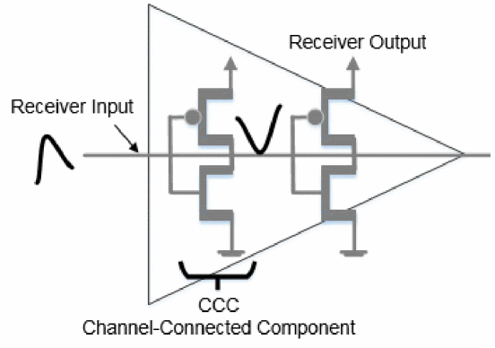
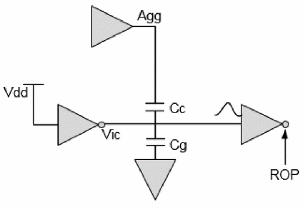
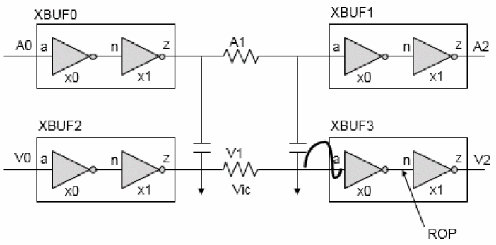
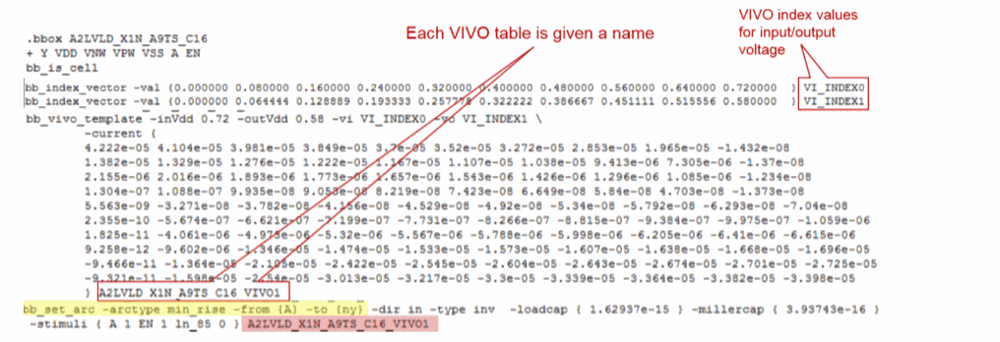
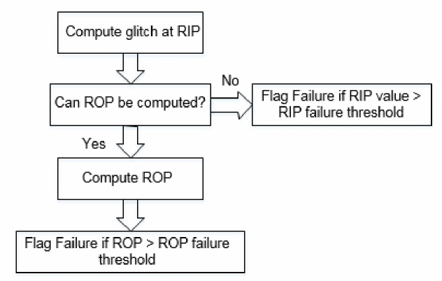
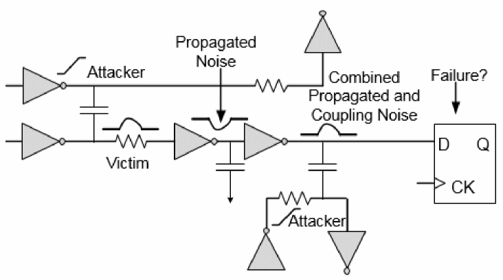

Understanding SI Glitch Analysis
In order to perform crosstalk functional failure analysis, Tempus first calculates the worst-case glitch that occurs on each victim net when it is not transitioning. This worst-case glitch is created from the worst-case combination of all allowable attackers where the attackers are nets that are coupled to the victim. The set of allowable attackers is determined from both timing and logic relationships between the victim and attacker nets. For example, attackers whose timing is such that they do not overlap are not combined. A unique worst-case glitch is calculated for each receiver (fanout) of the victim. Once the worst-case glitch is determined, Tempus performs a number of additional steps to determine if this glitch is harmful to the functionality of the design being analyzed.
There are three key components of SI Glitch analysis:
Glitch Waveform Computation
For more details, refer to section on Waveform Computation.
Glitch Failure Detection
When worst glitch is computed, Tempus checks if a glitch can result in failure. Tempus uses two criteria for glitch failure by measuring the glitch at input and output of receiver cell, as shown in the figure below.
These are illustrated in the diagram below.
Figure -46 Glitch representation at input and output of receiver

Receiver Input Peak (RIP) Check
If a net has a receiver without noise data, then the receiver input peak (RIP) is compared against:
set_db si_glitch_input_threshold (or si_glitch_input_voltage_high_threshold, si_glitch_input_voltage_low_threshold)
set_glitch_threshold-failure_pointinput–threshold_typefailure–valuefloat
In this case, failure can occur if RIP is greater than the tolerance threshold value.
Receiver Output Peak (ROP) Check
Tempus has the capability to compute glitch impact one step inside the cell, that is, at the output of the first Channel Connected Component (CCC) in the cell. This is known as ROP (Receiver Output Peak) analysis. Since CMOS logic acts as a low pass filter, it attenuates the glitch, so that the glitch checked at the output of the first CCC may be less than the glitch at the input of the cell. Using the ROP to determine failure may reduce the number of violation counts.
If a net has receiver with noise data (cdB or ECSM-Noise or CCS-Noise), then Tempus propagates the glitch one stage and calculates the Receiver Output Peak (ROP). If the arc is from input to output of the cell, then failure will occur if ROP is greater than the values specified using the following command:
set_dbsi_glitch_receiver_peak_limit(or si_glitch_receiver_clock_peak_limit, -si_glitch_receiver_latch_peak_limit)double
set_glitch_threshold –failure_point last –pin_type {clock | data | latch | all} –threshold_type failure –value float
If the arc is from an input to an internal node of a combinational cell, by default failure will occur if ROP is greater than 30% of the vdd value or if it is greater values specified using the following command:
set_glitch_threshold –failure_point input –pin_type {clock | data | latch | all} –threshold_type failure –value float
If the arc is from an input to an internal node of a sequential cell, then failure will occur if ROP is greater than the value specified using the following command:
set_db si_glitch_receiver_latch_peak_limit float
set_glitch_threshold –failure_point last –pin_type latch –threshold_type failure
–valuefloat
Figure -47 ROP (Receiver Output Peak) for single stage cell

In case of single stage receiver cell, as shown in the figure above for Victim Vic, ROP will be performed at the output of receiver cell.
Figure -48 ROP (Receiver Output Peak) for multi-stage cell

While in case of multi-stage cell, as shown in the figure above for Victim V1, ROP will be performed at the output of the first stage of receiver cell XBUF3.
ROP is computed using the VIVO (Voltage In Voltage Out) current tables from the noise library (cdB), ECSM-N library, or CCS-N library. VIVO tables are characterized for single CCC. Tempus uses VIVO information, stored for the corresponding input pins, for ROP computation.

Glitch Failure Flow
The Glitch Failure Flow diagram is given below.
Figure -50 Glitch Failure Flow

Glitch Propagation
Tempus performs glitch propagation that:
- Allows glitch to propagate and combine with coupling glitch noise along the path.
- Models driver weakening due to glitch coming at the input pin. Due to glitch at driver input, the current capability of the driver reduces leading to larger glitch at the output.
The following figure illustrates the glitch propagation feature:

Driver weakening is needed for single-stage cells, not for multi-stage cells. In single-stage cells, when ROP is not failing, driver weakening may affect the next stage if the coupling on the next stage is big enough to be kept. In multi-stage cells, there is no coupling internal to the cell so glitch propagation does not need to be taken into account. This is because a non-failing glitch is not likely to propagate to the output of the cell.
Single-Stage Glitch Propagation and Driver Weakening
If glitch propagation is enabled, Tempus will propagate the glitch through single-stage cells as long as it is not failing. A glitch is deemed failing when the receiver output peak is greater than the threshold value specified using the following command:
set_db si_glitch_receiver_peak_limit (or si_glitch_receiver_clock_peak_limit, si_glitch_receiver_latch_peak_limit)
The failing receiver output peaks are not propagated. Even if the input glitch is not large enough to propagate to the output of the single-stage cell, it weakens the driver such that when the output of the cell is attacked, the coupling noise is much larger. Tempus models driver weakening when glitch propagation is enabled.
Single-stage glitch propagation and driver weakening is enabled automatically when using the update_glitch command or by specifying the set_db si_enable_glitch_propagation true command before using the report_timing or update_timing commands.
Failure Detection with Enabled Noise Propagation
Glitch impact computation starts with the first net in the path and traced downstream. A stage is analyzed taking into account the propagated glitch from last stage and the coupling of current stage. You can compare the total glitch seen at the receiver with the failure threshold. If the glitch exceeds failure threshold, then failure is flagged at the receiver and glitch impact from this stage is not propagated further to downstream logic. If the glitch is less than failure threshold, then the glitch impact at this stage is propagated to downstream logic.
Return to top